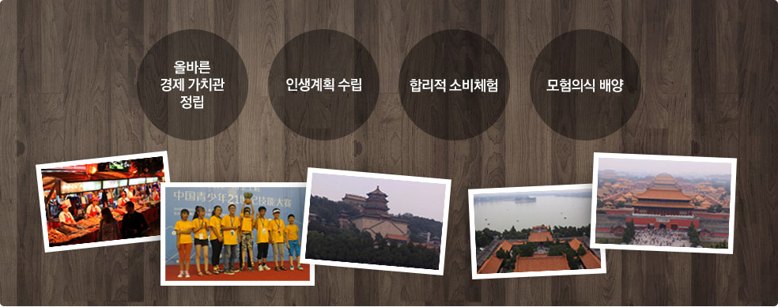

작은 경영인 교육과정 소개
중국 최고의 명문대인 베이징대학에서 체험하는 7박 8일간의 어린이 경제교육 캠프 “작은 경영인 교육과정”은 금융전문가, 경제 전문가, 교육 전문가가 모여서 만든 맞춤형 어린이 경제 교육 프로그램입니다. 작은 경영인 교육과정은 어린이에게 올바른 경제관념을 심어 줄 수 있을 뿐만 아니라, 중국 현지 어린이들, 현지 유학생들과의 교류를 통해 살아있는 중국을 체험하고 느낄 수 있도록 구성되어 있습니다. 또한, 중국어를 전혀 몰라도 현지에서 생활하는 데 필요한 필수 중국어 학습을 동시에 진행하고 있어, 중국어 학습에 대한 동기부여가 가능한 프로그램입니다.
작은 경영인 교육과정 목표
작은 경영인 교육과정 특징
- 중국 최고 명문대인 베이징대학의 면학 분위기 속에서 글로벌 인재 교류 가능
- 어린이 경제 교육전문가 초빙으로 이루어진 전문적 커리큘럼 구성
- 중국 문화 유적지 탐방 및 실생활 체험을 통한 현지화 교육 진행
- 베이징대학의 현지 한국 유학생을 멘토로 하여, 중국에 대한 현지 생활 및 문화지식 전수
작은 경영인 교육 과정 내 Role-Playing Game : 항해게임을 통한 학습효과
작은 경영인 교육 과정에 포함된 항해게임은 다양한 상황과 임무를 수행하는 RPG(Role-Playing Game) 요소를 적용하여 올바른 재무관 확립과경제관념에 대한 이해를 직·간접적으로 체험할 수 있도록 구성되어 있습니다. 항해게임을 통해 학습의 흥미를 유발함과 동시에, 아이들에게 자연스럽게 재무의 개념과 관리능력을 습득할 수 있는 장점이 있는 신개념 교육과정입니다.
- 교육 효과 1올바른 재무관 확립 : 재산은 행복을 누릴 수 있는 능력이고, 선택 할 수 있는 권리라는 것을 이해한다.
- 교육 효과 2과학적 인생계획 수립 : 목표를 달성하기 위한 체계적이고 과학적인 전략을 수립을 통해, 자신의 인생계획을 세운다.
- 교육 효과 3선택 체험 : 다른 선택을 통해 어떠한 결과를 얻을 수 있는지 체험을 한다.
- 교육 효과 4합리적 소비 체험 : 어떻게 소비를 해야 가장 합리적인가를 고민하고 체험한다.
- 교육 효과 5모험의식 배양 : 다양한 모험을 통해 위기를 극복하는 방법을 체험한다.
- 교육 효과 6보답체험 : 이 세상에 공짜로 받는 도움은 없다. 받은 도움에 대한 보답방법을 고민하고 체험한다.
- 교육 효과 7신용유지 : 모든 수익에는 상응하는 대가가 있다. 반칙하지 않고 신용을 지켜 위험에 대비하는 방법을 습득한다.
- 교육 효과 8속임수 방지 : 속임수 방지에 대한 필요지식을 습득한다.
- 교육 효과 9사회책임 : 타인에게 받은 도움에 대해, 어떠한 방식으로 보답할 것인지를 고민한다.
- 교육 효과 10재정관리 습관 : 어떻게 금전출납부를 기록하는지를 게임을 통해 습득한다.
- 관련 중국기사 : 관련기사 보러가기